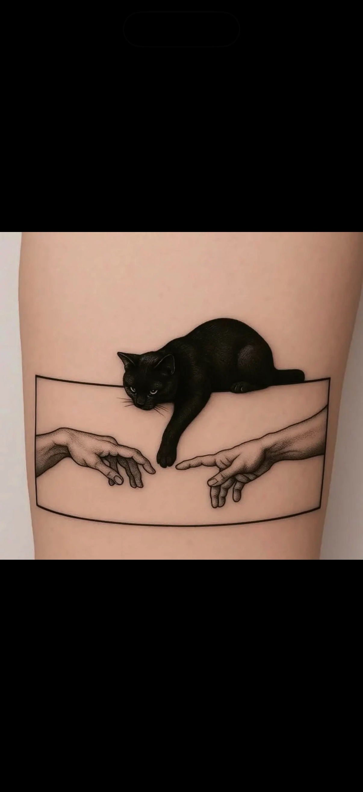
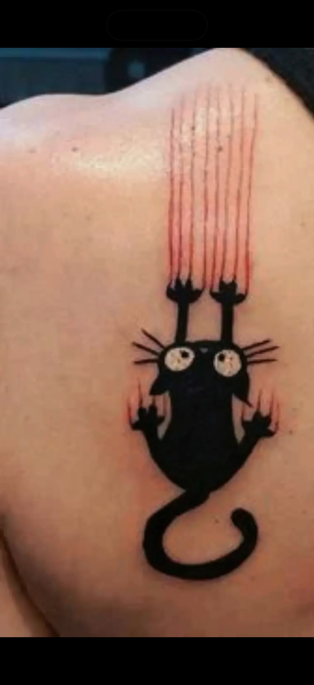
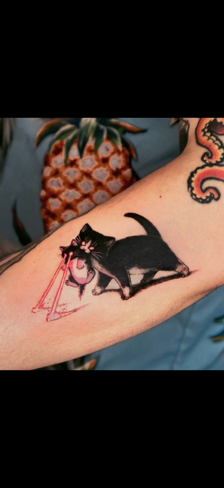
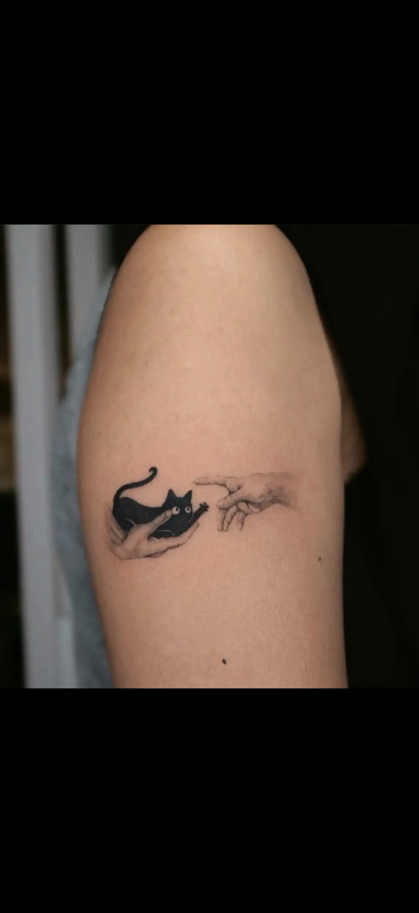
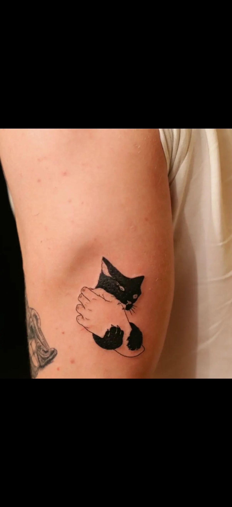

Gratulálok. A 10/10-es értékeléseddel feloldottad Bob elit jutalmát: 6 rendkívül komoly, teljesen vállalható és abszolút nem túlzás Bob-tematikájú tetkóötletet.
Ezek inkább inspirációk, mint kész minták — de a vibe nagyon erős.
Egy elegáns, magabiztos Bob-portré minimalista vonalakkal. Az a fajta minta, ami egyszerre cuki és úgy néz ki, mintha ő lenne a család ügyvédje.

Egy kissé misztikusabb Bob-változat, mint egy macskás védőszent, aki figyel rád, de közben bármikor lelök valamit az asztalról.

Egy apróbb, játékos Bob-minta, ami tökéletes mikro tetkónak. Olyan kis uralkodói jelenlét, amitől mindenki tudja, hogy itt valójában ő a főnök.

Tökéletes azoknak, akik már beletörődtek, hogy az ágy jogilag és érzelmileg is Bob tulajdona. Egy kényelmesen elterülő legenda.

Ez a verzió olyan, mintha Bob épp a következő Dreamies-adag sorsáról döntene. Kifejezetten jó inspiráció egy szöveges vagy kis szimbólumos kiegészítéssel.

A legerősebb végső forma. Ez már nem egyszerűen egy macska-tetkóötlet, hanem egy életfilozófia: önbizalom, vörös szőr, csapvíz és kontroll.